Ocupada la casa de un vecino de Girona de 90 años que la tenía en venta
Un vecino de Girona de 90 años ha denunciado que le han ocupado la casa que tiene en venta en el número 12 del paseo Joan Bosco, situada en el barrio de Pont Major, según informa Diari de Girona, medio del grupo Prensa Ibérica. El vecino, Jesús Pradas, va allí de vez en cuando para hacer diferentes tareas de mantenimiento y ha señalado que, este martes, pudo hacer estos trabajos con normalidad. Sin embargo, este miércoles se ha encontrado «con la cerradura forzada», ha detallado. Los ocupantes, en este caso, son «dos familias con niños». De hecho, Pradas narra que cuando intentó entrar en la vivienda se encontró con una silla que lo impedía, y fue a partir de ahí cuando, «asustado», solicitó la presencia policial.
Transportes avanza en la construcción de la estación de alta velocidad del aeropuerto Girona-Costa Brava.
En el irresoluto debate sobre la ampliación de Barcelona-El Prat, siempre acaba apareciendo en la ecuación la infrautilización de los aeropuertos de Reus y Girona-Costa Brava. No obstante, para que este último se convierta realmente en una infraestructura a tener en cuenta en el sistema de transporte de viajeros, es imprescindible que esté bien conectado. El Ministerio de Transportes ha anunciado este miércoles que, tras años de retrasos y análisis, evaluaciones e informes, se ha aprobado el estudio informativo para construir la estación de alta velocidad, a unos 600 metros del aeropuerto de Vilobí d'Onyar (La Selva).
Girona FC - Real Madrid: Modric y Vinicius arbitran a favor del Madrid para mantener el pulso de la Liga
El Real Madrid recuperó la tranquilidad en la Liga, donde los últimos tres partidos terminaron en un thriller arbitral sin resolver. Con muchos culpables y responsables, pero con el único efecto plausible de haber perdido el liderato en favor del Barça. Contra el Girona, Modric resolvió el entuerto en un encuentro de entreguerras.
 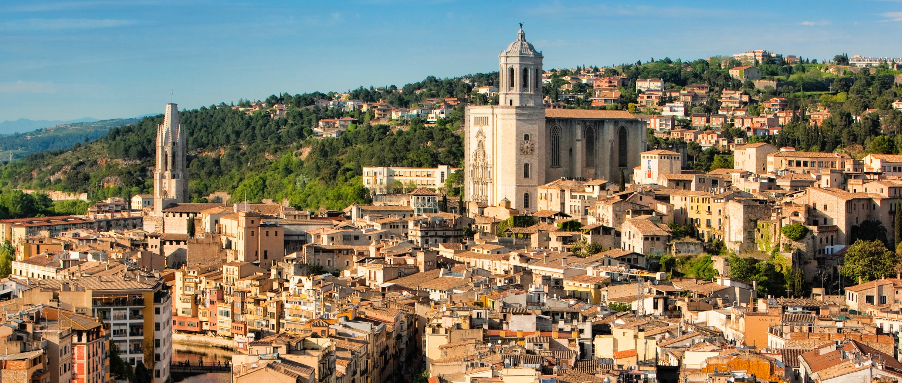
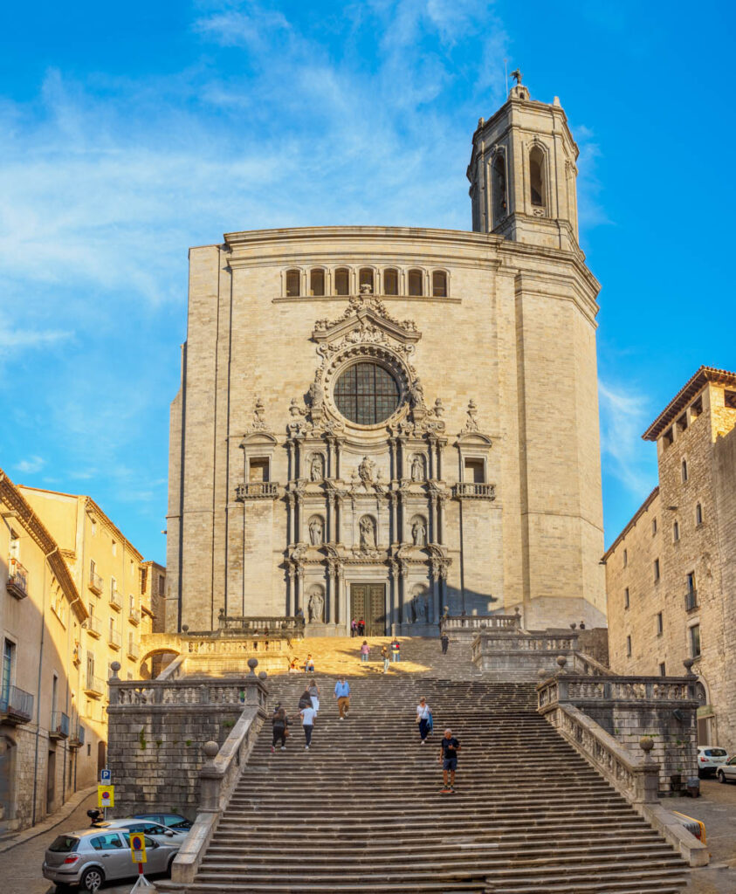
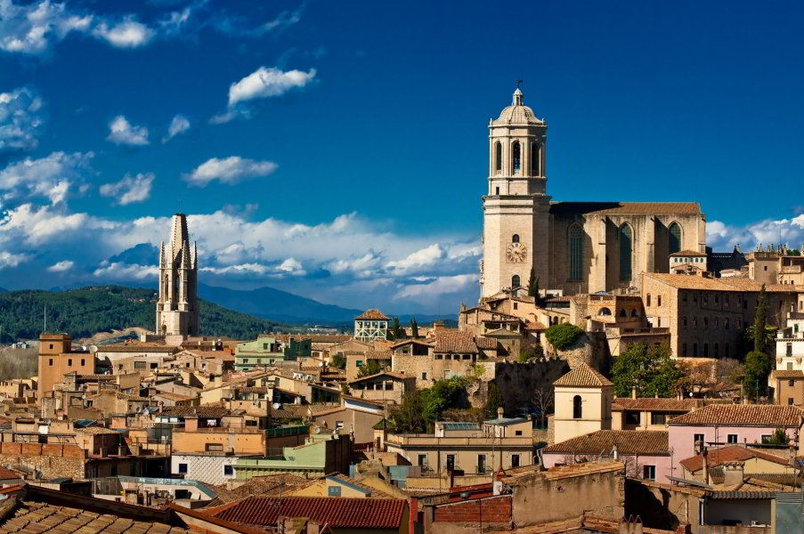
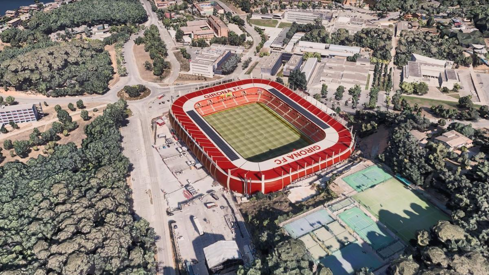
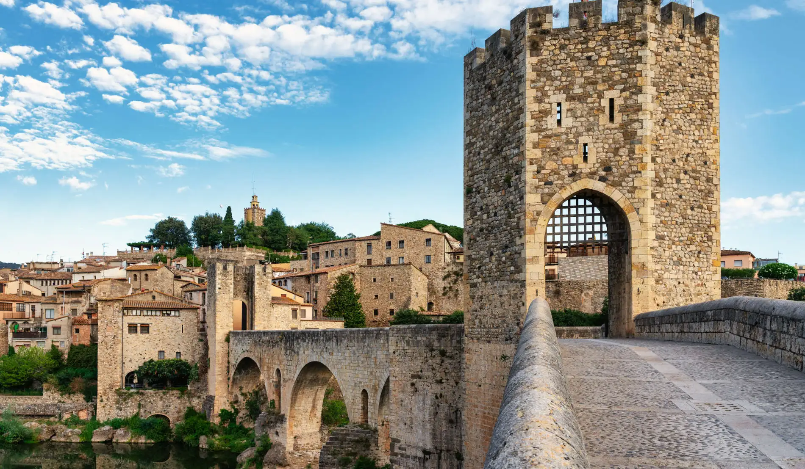
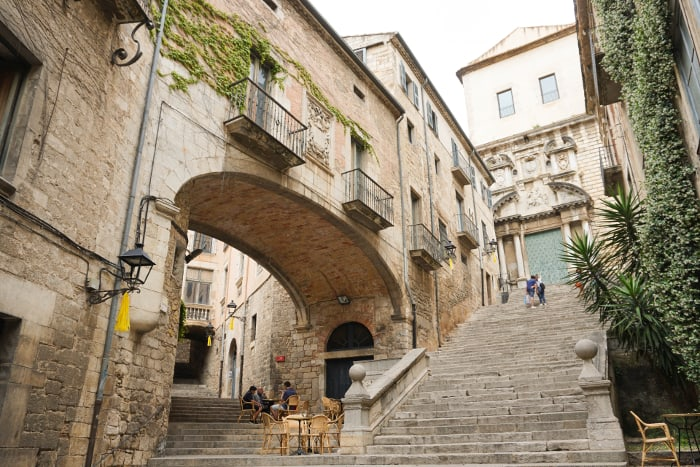
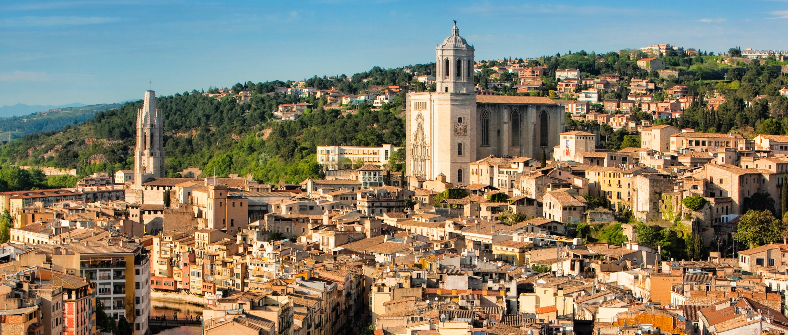
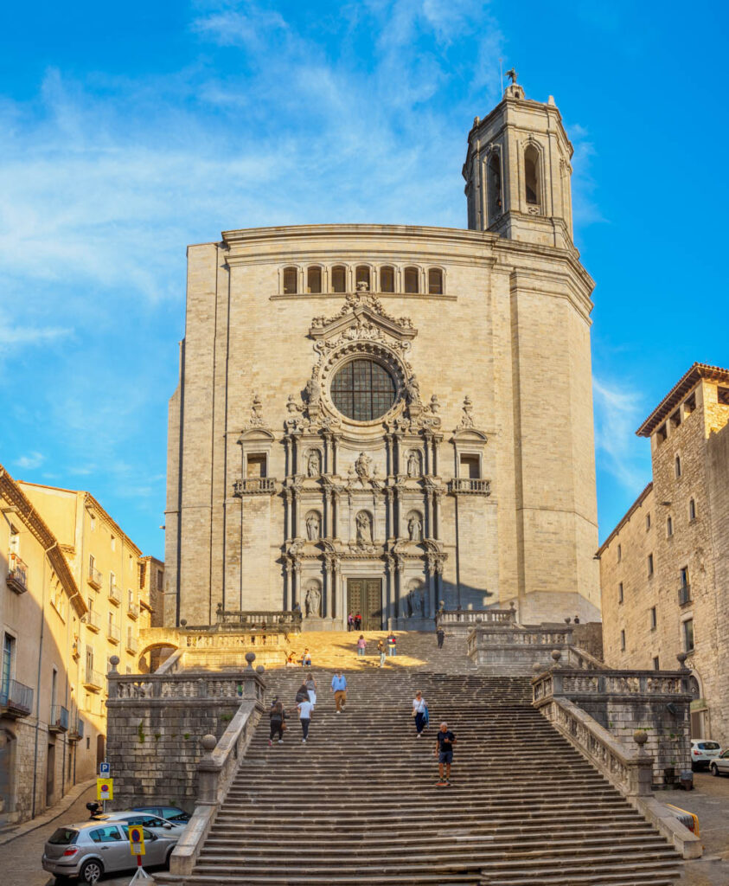
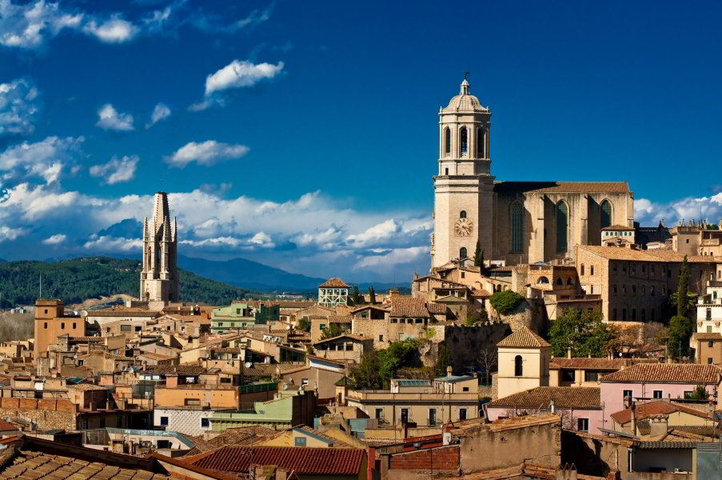
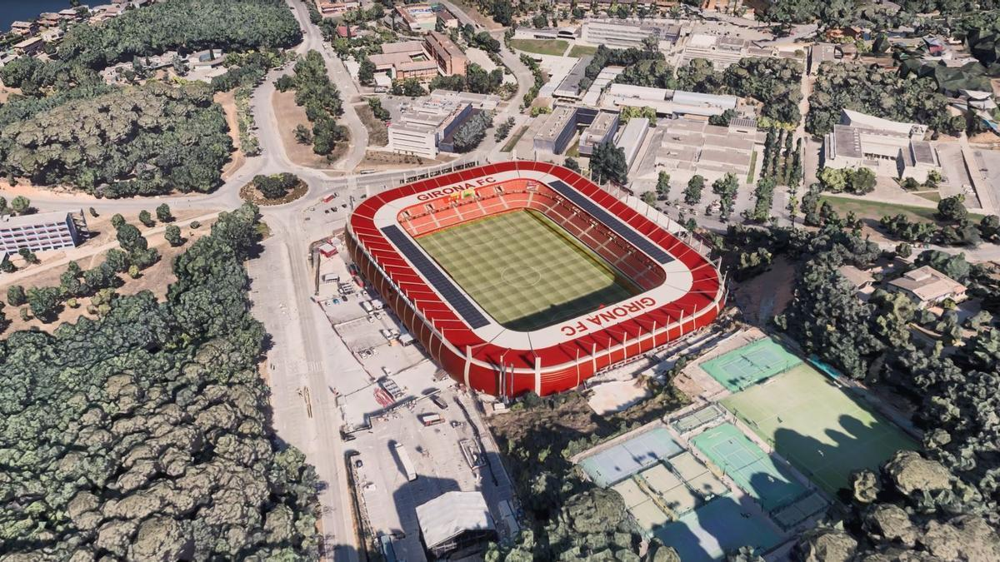
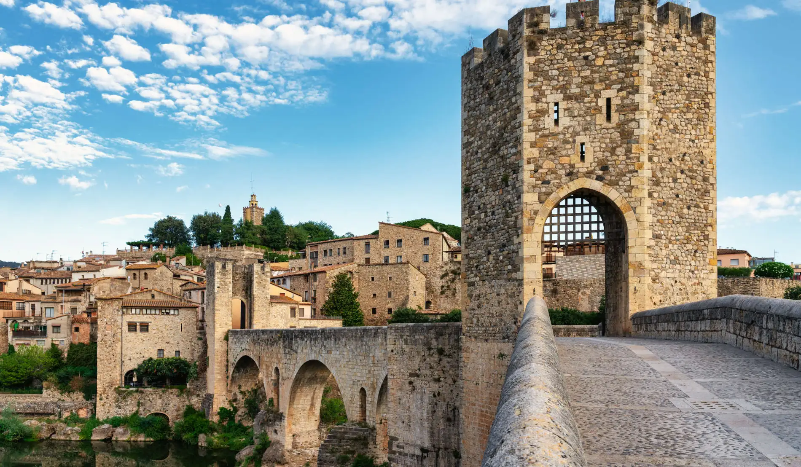
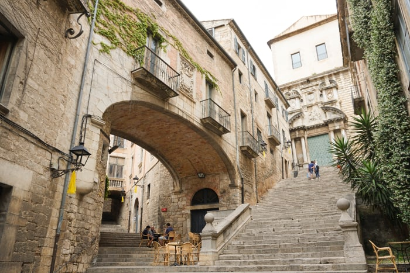